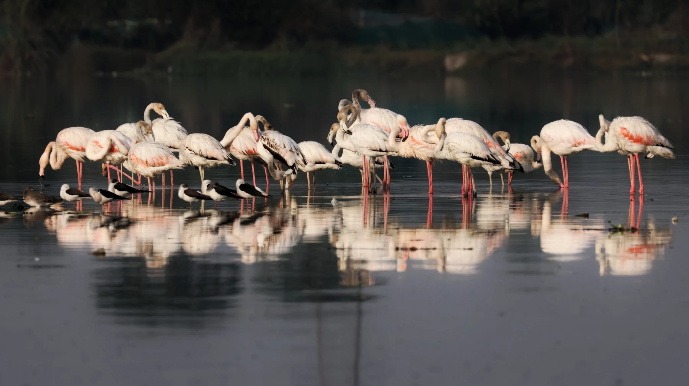
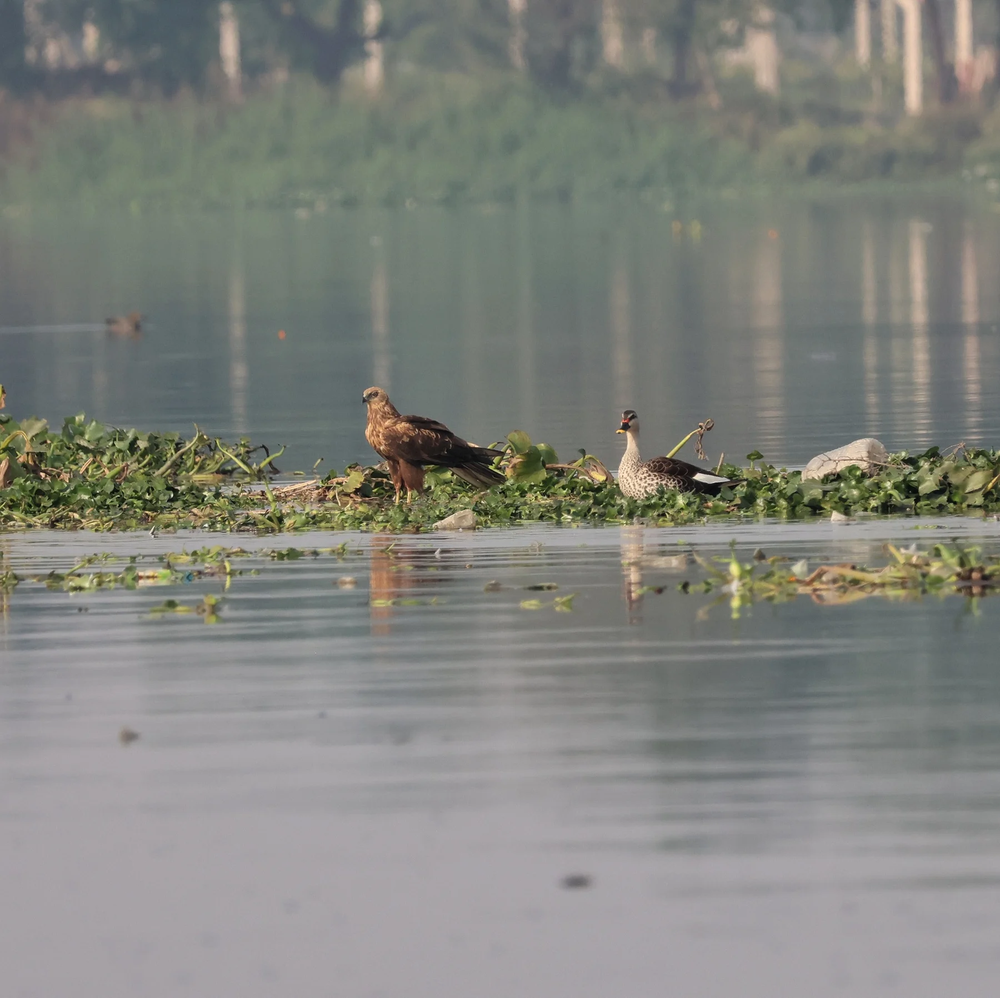
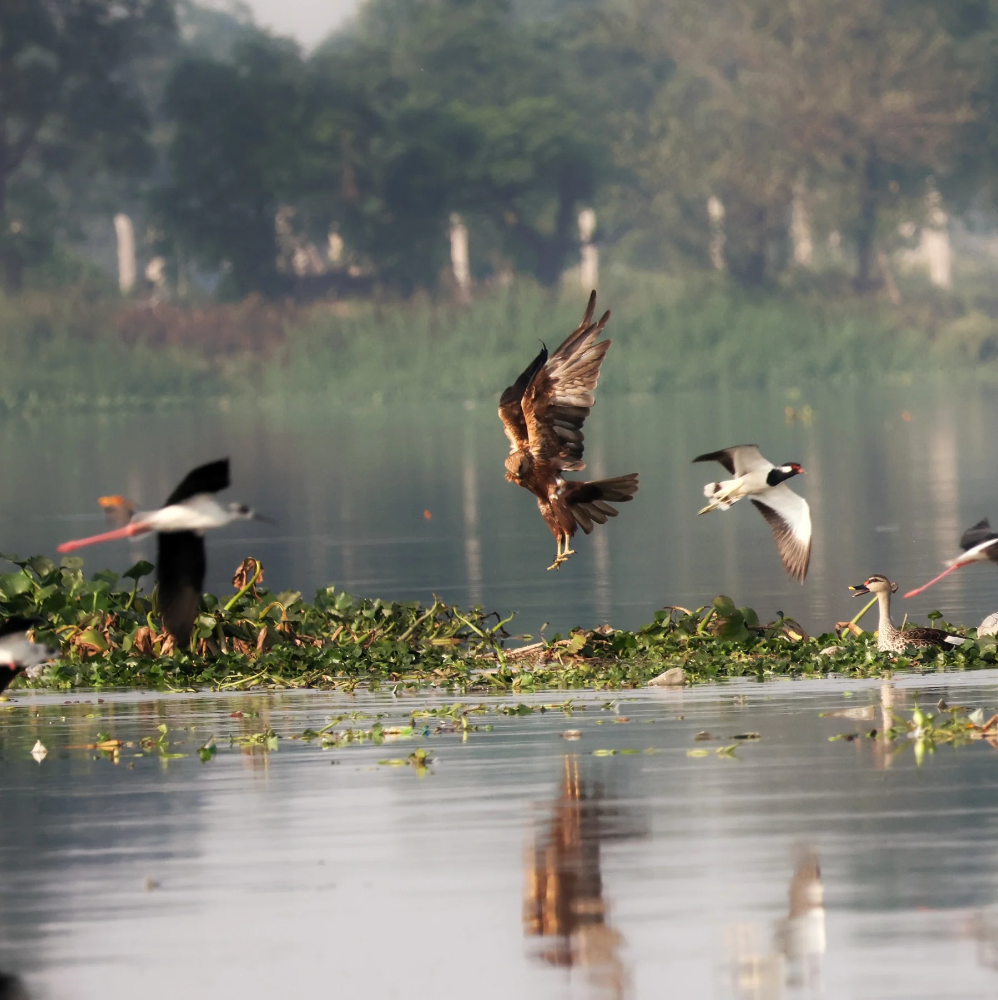
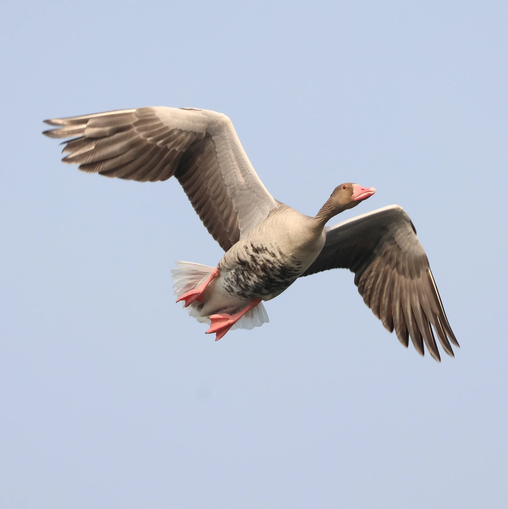
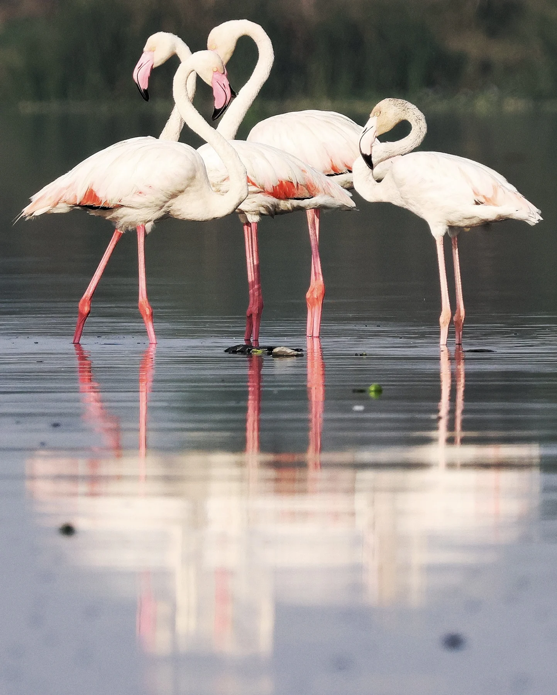

KASHIF YAMEENKASHIF YAMEEN
KASHIF YAMEENKASHIF YAMEENChoose a destination or ask Kashif to help plan your outing.
Enquire on WhatsApp ↗ Yellow woodland bird · Kashif Yameen
Yellow woodland bird · Kashif YameenHalf day (3–4 hours): meet, guided birdwatching, refreshment break, photography and sightings recap.
Full day (6–8 hours): morning birding, refreshments, additional habitat exploration and afternoon birding, subject to access.
Guided birdwatching and refreshments only. No meals or accommodation. Timing and fees confirmed before booking.

Urban gardens & heritageGarden paths, historic monuments and common urban birds.
Half day · Explore ↗
Wetlands & seasonal migrantsWetland edges, waterbirds and open-country birding.
Half or full day · Explore ↗
Yamuna wetlandsExplore accessible wetland viewpoints and waterbird habitats.
Half day · Explore ↗ Open wetlands
Open wetlandsScan open water and fields for seasonal birds and cranes.
Half or full day · Explore ↗
Wetlands & photographyExplore wetland habitats and surrounding agricultural landscapes.
Half day · Explore ↗ Aravalli woodland
Aravalli woodlandDiscover scrub, rocky landscapes and woodland birdlife.
Half day · Explore ↗
Woodland trailsWalk forest paths and listen for woodland birds.
Half day · Explore ↗ Native habitats
Native habitatsExplore restored native vegetation and seasonal birdlife.
Half day · Explore ↗ Biodiversity & wetlands
Biodiversity & wetlandsDiscover restored ecosystems and their bird communities.
Half day · Explore ↗